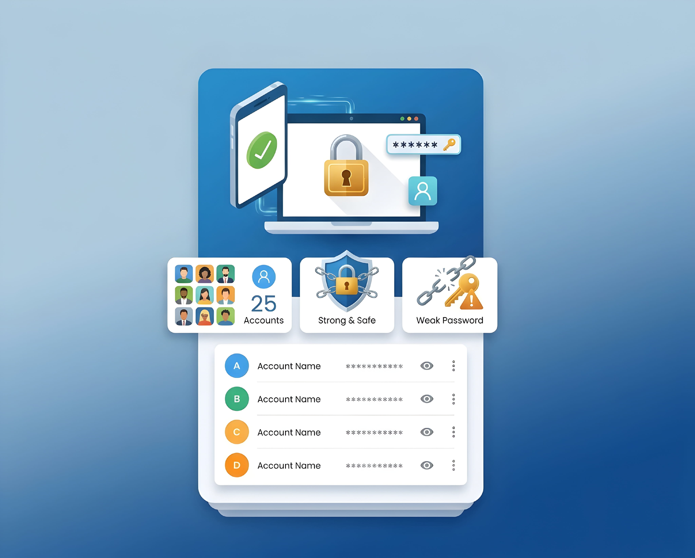
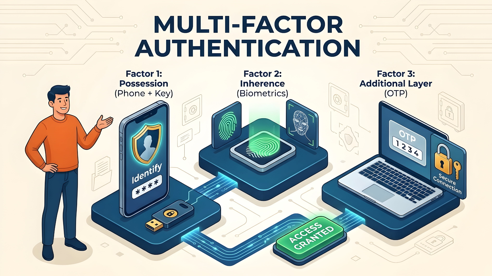
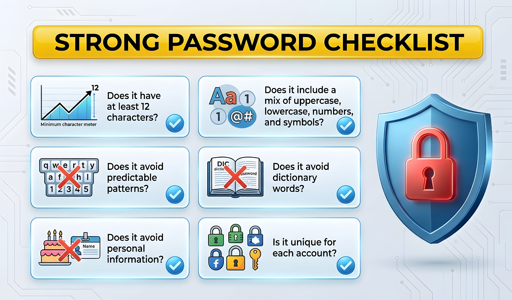

Think about how many accounts you use every day. You may have an email account, social media profiles, online shopping accounts, a bank account, and several apps. Each one holds a different part of your life.
Now imagine using the same password for all of them. It feels easy because you only need to remember one password. But there is a problem: if someone gets that password from just one website, they may try it on your other accounts too.
That is why using a different password for every account matters. In this guide, we will look at what can go wrong, how attackers take advantage of reused passwords, and what you can do to protect your accounts without trying to remember dozens of passwords.
What Is Password Reuse?
Password reuse means using the same password for two or more accounts. For example, you might use one password for your email, another website, and a shopping app. If all three accounts use the same password, they are connected by that one secret—even if the websites have nothing to do with each other.
It can also happen when you make small changes to one password. For example, you might use BlueRiver!27 on one site and BlueRiver!28 on another. These are not identical, but they follow an easy-to-guess pattern. A safer approach is to use a completely different password for each account.
Why Is Reusing Passwords Dangerous?
The main problem is that you cannot control how every website protects its users' information. A service may suffer a data breach, or someone may trick you into entering your login details on a fake page. If the password you used there is also protecting your email or another important account, the damage can spread.
Here is a simple example. Imagine that you use the same password for a small online forum and your personal email. The forum is attacked, and its users' login details are exposed. Someone may take the email address and password from that leak and try them on popular email services. If you reused the password, the attempt may work.
This does not mean every data breach will lead to every account being taken over. It means password reuse gives attackers an opportunity they would not have if each account had its own password. NIST explains that distinct passwords help protect users from attacks that try a password exposed on one service against another service. Read NIST's digital identity guidance.
How Credential Stuffing Works
There is a name for this type of attack: credential stuffing. It happens when attackers use stolen usernames and passwords from one service and try them on other websites or apps.
Think of it like someone finding a key that opens one door, then testing copies of that key on other doors. If you use the same password in many places, one leaked password may open more than one account.
- A website is breached: Login details are stolen or exposed.
- The details are collected: Attackers get a list of email addresses, usernames, and passwords.
- The same details are tested elsewhere: Automated tools may try those combinations on other services.
- Reused accounts may be accessed: If a password still matches, an attacker may get into that account.
This is not the same as guessing a password from scratch. In credential stuffing, attackers are using login details that have already been exposed somewhere else. The US Cybersecurity and Infrastructure Security Agency (CISA) describes how this attack takes advantage of password reuse. See CISA's explanation.
What Can Happen If One Password Is Stolen?
The result depends on which account is exposed and what other accounts use the same password. But the possible consequences are serious.
- Email access: Someone who gets into your email may read private messages or use password-reset links to reach other accounts.
- Social media access: An attacker may send messages from your profile, post unwanted content, or lock you out.
- Shopping account access: Saved addresses, order details, and other account information may be exposed. Payment risks depend on the service and its security checks.
- Financial account risk: A reused password can make a financial account easier to target, although banks may use extra checks and protections.
- Loss of access: An attacker may change account details or recovery settings, making it harder for you to get your account back.
Your email account deserves special attention. It is often used to reset passwords for other services. Give it a unique password and turn on multi-factor authentication wherever it is available.
How to Use a Different Password for Every Account
You do not need to invent a clever password every time you sign up for something. In fact, making up passwords by adding a number or symbol to the same familiar phrase can create patterns that are easier to guess.
Instead, follow these steps:
- Give every account its own password. Never copy the password from your email, social media, shopping, or banking account to another service.
- Make passwords long and hard to predict. Use a password manager to generate random passwords. If you create a passphrase yourself, choose several unrelated words that are not personal facts about you.
- Avoid information people can find about you. Do not use your name, birthday, phone number, pet's name, or favourite team as the basis for a password.
- Do not use simple patterns. Passwords such as
Summer2026!orPassword123are predictable examples, not good choices. - Save each password securely. A trusted password manager can create and store a different password for each account.
Longer passwords are generally harder to guess, but length alone is not enough. A long password reused on several websites can still put all those accounts at risk. The important combination is a long, unpredictable, unique password for each account.
Should You Use a Password Manager?
For most people, remembering a separate strong password for every account is not realistic. This is where a password manager can help. It is an app or built-in service that stores your passwords in a protected vault. Many password managers can also create random passwords and fill them in when you sign in.
With a password manager, you only need to remember the main password that unlocks your vault, along with any extra sign-in method it requires. The manager handles the separate passwords for your other accounts.

Choose a reputable password manager. Check that it explains how your data is protected, supports multi-factor authentication, and offers a way to recover access safely. Use a strong, unique master password and protect the manager itself with MFA if that option is available. A password manager is helpful, but it is not a reason to ignore updates or account security.
You can also use a password manager built into an operating system or browser if it meets your needs. For example, Google provides Google Password Manager, and Apple devices include password security recommendations. The best choice is one you understand and can use safely across your devices.
Add Another Layer of Protection With MFA
A unique password is an important first step, but it is not the only protection you should use. Turn on multi-factor authentication (MFA) for important accounts whenever it is available.
MFA asks you to prove your identity in more than one way. For example, after entering your password, a service may ask you to approve a sign-in on your phone, use an authenticator app, or connect a security key. This means a stolen password alone may not be enough to enter your account.

Start with your email, banking, social media, cloud storage, and password manager accounts. If a service offers a passkey or a security key, consider using it. Not every sign-in method offers the same level of protection, so choose the strongest practical option the service supports.
What to Do If You Have Reused Passwords
If you have used the same password on several websites, do not panic. You can reduce the risk by changing the passwords in a sensible order.
- Secure your main email account first. Create a new, unique password and enable MFA. Make sure its recovery email and phone number are yours.
- Change passwords on important accounts. Start with banking, payment services, social media, cloud storage, and accounts that contain private information.
- Replace every reused copy. If the old password was used on ten sites, change it on all ten—not just the site where you first heard about a breach.
- Check for security alerts. Use the account provider's official security or password-checkup page. Do not follow suspicious links in unexpected emails or text messages.
- Review recent account activity. Look for unfamiliar devices, sign-ins, recovery details, or messages. Sign out of sessions you do not recognize and follow the provider's recovery steps if something looks wrong.
If you believe an account has already been taken over, use the service's official account-recovery page. If a financial account is involved, contact the bank or provider through its official app, website, or phone number.
Password Mistakes to Avoid
- Reusing a password with small changes: Adding a different number to the same base password is not a reliable way to make separate passwords.
- Sharing passwords: Do not send passwords through chat, email, or social media messages.
- Saving passwords in an unprotected note: A plain text note or screenshot can expose your logins if someone accesses your device or cloud account.
- Trusting unexpected password-reset messages: Open the service's official app or type its address yourself instead of clicking a suspicious link.
- Ignoring breach warnings: If a trusted service tells you a password may be exposed, verify the alert through the service's official security page and change that password.
- Changing passwords on a fixed schedule without a reason: Focus on unique, strong passwords and change them promptly when you think they have been exposed or misused. NIST advises against forcing routine password changes when there is no evidence of compromise.
A Simple Password Security Checklist
Use this checklist to review your most important accounts. You do not have to fix everything at once. Start with the accounts that could cause the most trouble if someone else gained access.

- Every important account has a different password.
- My email account has a unique password and MFA.
- I use a password manager or another secure way to store passwords.
- My password manager has a strong master password and extra sign-in protection.
- I have changed passwords that were reused or exposed in a breach.
- I check account activity and security alerts through official websites or apps.
Frequently Asked Questions
Is it really unsafe to use the same password on two websites?
Yes. If one website exposes that password, someone may try it on the other website. Use a different password for every account, even if one account seems unimportant.
What is credential stuffing in simple words?
Credential stuffing is when attackers take login details exposed from one service and try the same details on other services. It works best when people reuse passwords.
How can I remember so many different passwords?
You do not need to memorize them all. A trusted password manager can generate and store unique passwords. You only need to protect access to the manager itself.
Is a password manager safe to use?
A reputable password manager can make safer password habits easier. Choose one with clear security information, use a strong unique master password, enable MFA when available, and keep the app updated.
Does two-factor authentication make password reuse safe?
No. MFA adds protection, but it does not make password reuse a good idea. Keep passwords unique and use MFA as an extra layer.
Should I change my passwords every month?
Not necessarily. Use strong, unique passwords and change a password when you believe it has been exposed, stolen, or used without your permission. Follow any specific security instructions from the service.
What should I do if I receive a warning that my password was found in a data breach?
Go directly to the official website or app, check the alert there, and change that password. If you reused it elsewhere, change it on every other account where it was used. Turn on MFA and review recent account activity.
Final Thoughts
Using one password everywhere may feel convenient, but it gives a stolen password more chances to cause trouble. If one website is breached, attackers may try those same login details on your other accounts.
The fix is simple: use a different, long, unpredictable password for every account. A password manager can help you do that without memorizing them all, and MFA adds another layer of protection. Start with your email and other important accounts, then work through the rest.
Your accounts do not all need the same key. Give each one its own, and keep that key safe.